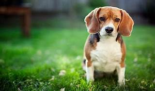

The Beagle is a small hound dog breed that is popular as both a pet and a hunter. It resembles a small foxhound and has large brown eyes, hanging ears, and a short coat, usually a combination of black, tan, and white. The Beagle is a solidly built dog, heavy for its height. It generally excels as a rabbit hunter and is typically an alert, affectionate dog.
varieties
-There are two Beagle varieties: those standing under 13 inches at the shoulder, and those between 13 and 15 inches. Both varieties are sturdy, solid, and 'big for their inches,' as dog folks say. They come in such pleasing colors as lemon, red and white, and tricolor. The Beagle's fortune is in his adorable face, with its big brown or hazel eyes set off by long, houndy ears set low on a broad head.Personality
-A breed described as 'merry' by its fanciers, Beagles are loving and lovable, happy, and companionable—all qualities that make them excellent family dogs. No wonder that for years the Beagle has been the most popular hound dog among American pet owners. These are curious, clever, and energetic hounds who require plenty of playtime...Gallery

Diet Chart
| Life stage | Meal size |
|---|---|
| Before 8 weeks | Breast milk only |
| After 8 weeks | Breast milk and 3 meals per day |
| 8 weeks to 6 months | 3 meals per day with dog kibble |
| 6 to 12 months | reduce to 2 meals per day |
| 1 to 7 years | 2 meals per day |
| More than 7 years | 2 meals per day |